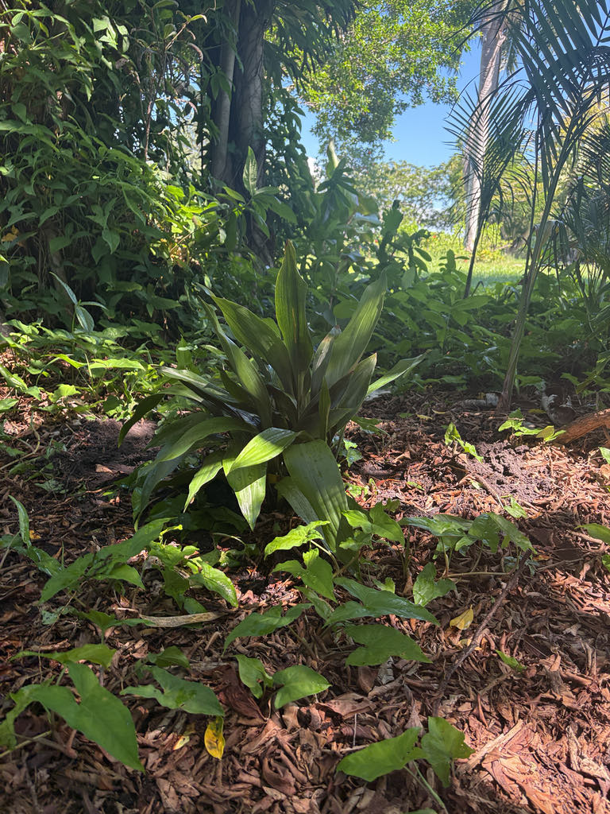

- For nearly a century, botanists believed the Cast Iron Plant held a unique distinction in the plant kingdom: it was thought to be the only flowering plant pollinated by slugs and land crustaceans. Field observation in 2017 finally overturned that idea — the real pollinators turn out to be fungus gnats.
- The flowers bloom at soil level, half-buried in leaf litter, and are shaped and colored to mimic mushrooms — which is exactly what fungus gnats are looking for. The plant offers no reward; it simply fools them into visiting.
- In Victorian Britain the aspidistra was so embedded in middle-class life that it became a cultural shorthand for respectability — it appeared in a George Orwell novel, a Gracie Fields song, and reportedly in family records as a prized possession passed down across generations.
- The genus name Aspidistra comes from the Greek aspidion, meaning 'small round shield' — a reference to the shape of the stigma sitting at the center of the flower.
Aspidistra elatior is native to the forest understory of southern Japan — specifically a cluster of small islands at the southern end of the Japanese archipelago, including Kuroshima — and probably Taiwan as well. It grows beneath a canopy of broadleaf evergreen trees in dense, humid shade, exactly the conditions it has been exploiting in gardens ever since.
It reached European horticulture in 1822 and quickly became one of the most relied-upon parlor plants of the Victorian era, prized precisely because it could survive the gas lighting, coal smoke, and erratic watering of a nineteenth-century drawing room. In the American South it made the leap outdoors and has been a fixture of shaded garden beds and porches for well over a century.
UF/IFAS recommends it across all of Florida, USDA Zones 7 through 11.
- The genus Aspidistra is larger than most people realize. Once thought to contain only a handful of species, it has expanded dramatically since China opened to Western botanists in the 1980s — roughly 160 species have now been described, nearly all from forest understories across East and Southeast Asia. Aspidistra elatior is the one species grown worldwide.
- The Cast Iron Plant's flowers are one of botany's more entertaining puzzles. They open at or just below soil level, often completely hidden beneath fallen leaves, and their fleshy, dome-shaped stigma is structured to prevent self-pollination — the stamens are tucked inside a perianth tube well below the receptive surface, so a visitor has to crawl inside to move pollen.
- For most of botanical history this raised an obvious question: what kind of animal is actually doing that work?
- The long-standing answer — slugs, and later small soil crustaceans called amphipods — was based largely on indirect observation, and it stuck in textbooks for generations. Direct field study on Kuroshima Island, published in 2018, finally resolved the question: fungus gnats are the primary pollinators.
- The flowers appear to mimic mushrooms in shape and smell, exploiting the gnats' search for a fungal brood site. The plant offers no food reward — just a convincing disguise.
- In Victorian Britain the aspidistra became something close to a cultural institution. It crossed every class boundary — clumps stood in grand jardinieres in aristocratic parlors and equally in chipped terracotta pots in servants' cottages. Some family records document individual plants being passed down through multiple generations, maintained for over a century.
- The plant was eventually satirized as a symbol of dull respectability, which is perhaps the surest sign of how deeply it had embedded itself in everyday life.
In its native Japanese island habitat, the Cast Iron Plant's flowers attract fungus gnats that serve as its primary pollinators — a relationship built on deception rather than reward. The flowers mimic mushrooms in appearance, luring gnats that are searching for a fungal brood site. No food or nesting benefit is actually provided, but the gnats carry pollen from flower to flower regardless.
In Florida cultivation, wildlife value is limited. The plant is a non-native with no co-evolutionary history with local fauna, and it does not serve as a documented larval host for Florida butterflies or moths. The small berries that follow pollination are not a significant food source in managed landscape settings.
Visitors looking for the park's most active pollinator habitat will find it among the native plantings.
Leaves: deep green, strap-shaped, 18 to 24 inches tall, rising directly from the soil with no visible stem. Flowers: small, fleshy, purplish-brown, half-buried in mulch at or just below soil level in late winter to early spring. Spread: slow-creeping underground rhizomes that gradually expand a dense clump outward over many years.
In the landscape, the Cast Iron Plant spreads slowly by underground rhizomes, gradually expanding a clump outward over many years. Division of established clumps is the standard propagation method — seed production in cultivation is uncommon. Growth at every stage is slow.
Small, fleshy, eight-lobed flowers in cream to purplish-brown open at or just below the soil surface in late winter to early spring, almost always hidden by leaf litter or the plant's own foliage. They are easy to miss entirely. Each flower has a large, dome-shaped stigma that resembles a mushroom cap — a functional deception that attracts fungus gnats as pollinators.
Pollinated flowers develop into small, fleshy berries at the soil surface. They are not a significant wildlife food source in Florida cultivation and are generally hidden beneath the foliage.
Long, strap-shaped, dark glossy green leaves arise directly from the rhizome on short petioles, growing upright to about 18 to 24 inches tall and 3 to 4 inches wide. The leaf surface is leathery and tough. Variegated cultivars with cream or yellow lengthwise stripes are available; note that variegated leaves may revert to solid green if given too much fertilizer.
The plant has no visible aboveground stem. All leaves emerge from a network of thick, slow-creeping underground rhizomes that gradually expand the clump's footprint. This is also the structure from which the flowers arise — which is why blooms appear at ground level rather than on the foliage.
The plant announces itself as a dense, dark green clump of upright strap leaves rising straight from the soil — no visible stem, no branching. Crouch down and part the leaves near the base in late winter or spring and you may find the flowers: small, fleshy, purplish-brown, sitting at or just below the soil surface, often half-buried in mulch.
Look for the domed, mushroom-shaped stigma at the center of each one. If the clump is well established, check the edges for younger shoots emerging from the rhizomes — that slow outward creep is the plant's primary way of spreading.
The ASPCA lists Aspidistra elatior as non-toxic to dogs, cats, and horses. The leaves are also considered non-toxic to people. Nobody eats this plant, and there is no reason for concern if a pet takes a nibble — though ingesting large quantities of any foliage can cause mild, temporary stomach upset simply from the bulk of plant material. Otherwise harmless.
Invasive status: UF/IFAS rates the Cast Iron Plant's invasive potential as 'not considered a problem species at this time.' It spreads only by slow rhizome creep and does not self-seed aggressively in Florida conditions.
Cultivar options: Variegated cultivars — with cream, yellow, or white lengthwise stripes — are widely available and perform well in the same conditions as the species. Heavy fertilization can cause variegated leaves to revert to solid green; go easy on the nitrogen.
Cut foliage use: The leaves are prized by floral designers and have been used as cut foliage for well over a century. They are exceptionally long-lasting in arrangements and can be rolled, folded, or pinned into shapes without splitting — a useful trait that has kept the plant relevant in the cut-flower trade long after it fell out of fashion as a houseplant.
Pruning and care: Spent or yellowed leaves should be removed cleanly at the base with sharp pruners rather than pulled — tearing a leaf away can damage the rhizome below. New leaves emerge slowly, so keeping existing foliage intact and clean matters more here than with most plants.
Climate performance: In Bradenton's Zone 10A, cold is rarely a concern. The plant tolerates light frosts, but prolonged or hard freezes can injure the leaf tips and edges. If freeze damage does occur, wait until late winter and cut any browned leaves cleanly at the base before new growth emerges.
Summer shade: In the intense Florida summer, deep shade is not optional — it is essential; leaves will bleach and scorch in anything brighter than dappled light.
Pest awareness: Spider mites and scale are the pests most likely to find this plant, and they tend to hide on the undersides of leaves where dry-shade conditions give them cover. Check the leaf undersides periodically; early discovery makes control straightforward with insecticidal soap or neem oil. Problems are infrequent but worth a look when the weather has been hot and dry.


- © Randall Carter (CC-BY-NC), via iNaturalist